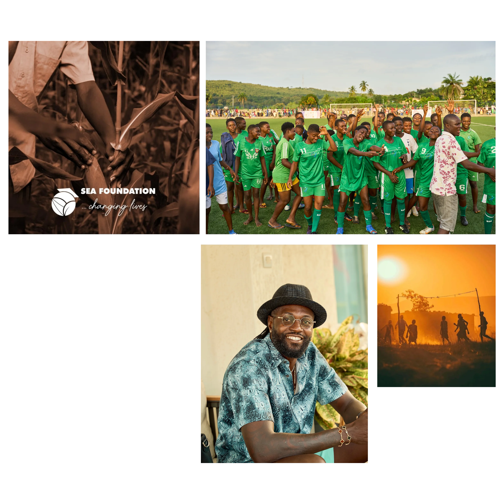
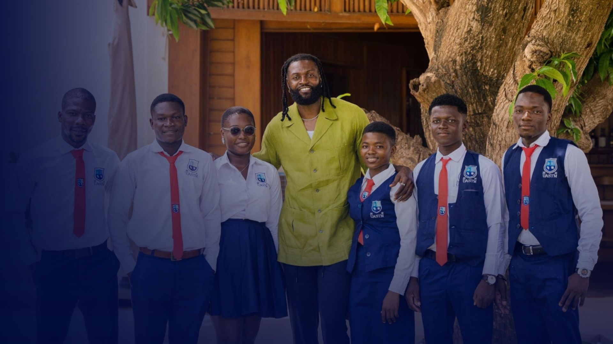
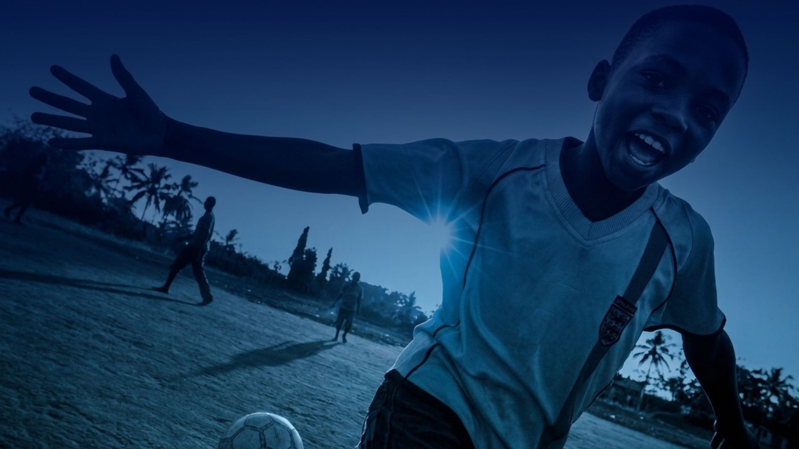

Une fondation engagée pour la jeunesse togolaise.
La Fondation Sheyi Emmanuel Adebayor promeut l’éducation, la santé et l’entrepreneuriat des jeunes au Togo. Le plan s’appuie sur l’engagement de son président et porte la vision d’une jeunesse en bonne santé, entreprenante et actrice du développement.
Découvrir notre visionLe potentiel est immense. Les obstacles aussi.
Face au chômage, au sous-emploi et aux difficultés d’accès aux soins, la Fondation relie santé, éducation, sport et insertion économique.
Cinq priorités déclinées du plan stratégique.
Le plan retient trois secteurs prioritaires. Les cinq cartes ci-dessous distinguent ces axes et certains domaines d’intervention décrits dans le document.
Santé & bien-être
Faciliter les soins primaires, une alimentation nutritive et la prévention des maladies pour les jeunes vulnérables.
Éducation & sport
Soutenir les bourses et les enseignants, encourager le sport scolaire et préparer les jeunes à l’emploi.
Entrepreneuriat
Incuber les projets, former à la mobilisation de fonds et soutenir l’insertion socioprofessionnelle.
Agriculture & agrobusiness
Former des agripreneurs et les accompagner dans différents maillons de la chaîne agricole.
Inclusion & transparence
Promouvoir l’équité de genre, l’inclusion du handicap et le libre accès aux rapports annuels.

Des actions qui ouvrent de nouvelles possibilités.
Avec les jeunes, les communautés et nos partenaires, SEA Foundation agit pour rapprocher les opportunités en santé, en éducation et en entrepreneuriat.
Les nouvelles de SEA Foundation.
Les dernières nouvelles et initiatives de SEA Foundation.
Former les jeunes aux nouvelles pratiques agricoles
4 mai 2026
DécouvrirDes objectifs précis, des actions sur le terrain.
Les trois axes du plan 2024–2028 détaillent comment les priorités deviennent des programmes, des accompagnements et des opportunités concrètes.
Renforcer la résilience sanitaire des jeunes
Améliorer le bien-être physique et mental des jeunes de 15 à 35 ans, en particulier ceux qui sont vulnérables ou éloignés des services.
Les actions prévues
- Soutenir l’accès aux soins de santé primaires en milieu urbain comme rural, y compris pour les jeunes en situation précaire ou de crise humanitaire.
- Favoriser l’accès à une alimentation saine et nutritive.
- Prévenir les maladies et la malnutrition, et contribuer à éviter les décès évitables, y compris ceux liés au VIH.
- Soutenir les familles et les communautés ; prendre en compte l’inclusion sociale, le genre et le changement climatique.
- Favoriser la santé physique et mentale dans un environnement propice au bien-être.
Le plan inscrit ces interventions en lien avec les stratégies nationales de santé et de nutrition.
Faire de l’apprentissage un tremplin
Mettre l’éducation et le sport au service de l’autonomie, de la santé et de l’insertion professionnelle des jeunes.
Les actions prévues
- Renforcer la formation des jeunes issus de milieux défavorisés, y compris ceux en situation de handicap.
- Soutenir les élèves vulnérables ou méritants en fournitures et par des bourses, selon des critères d’excellence et de vulnérabilité.
- Renforcer les capacités des éducateurs et appuyer les matériels didactiques et infrastructures modernes.
- Développer le réseau universitaire, public et privé, et encourager les filières STEM, l’entrepreneuriat et l’agrobusiness.
- Soutenir le sport scolaire et universitaire, les compétitions et les infrastructures ; utiliser le football pour la sensibilisation à la santé et la promotion de l’excellence.
- Renforcer les compétences numériques et les savoir-être (soft skills) pour préparer les jeunes diplômés à l’emploi.
Le plan relie ces interventions aux objectifs d’éducation de qualité (ODD 4) et de consolidation de la paix (ODD 16).
Transformer les idées en activités durables
Faire de l’entrepreneuriat un levier d’intégration économique et sociale, et soutenir la création d’emplois décents.
Les actions prévues
- Développer l’incubation et l’insertion socioprofessionnelle des jeunes en agrobusiness.
- Former et informer les jeunes pour développer des activités à différents niveaux de la chaîne agricole, dont les secteurs agro-sylvo-pastoral et halieutique.
- Accompagner la création d’agro-entreprises et former les porteurs de projets agricoles à la levée de fonds.
- Renforcer la mobilisation et la gestion des fonds pour les initiatives des jeunes, en se focalisant sur les résultats et la transparence.
- Soutenir les initiatives innovantes des jeunes dans l’agriculture, le numérique, l’éducation et la santé.
- Développer des champions nationaux choisis par des processus compétitifs transparents.
Le plan relie cet axe à l’ODD 8 (emploi décent) et à l’ODD 1 (réduction de la pauvreté), et souligne l’équité de genre, l’inclusion du handicap et les effets positifs pour l’environnement.
Croire en une jeunesse qui fait avancer le Togo.
Les repères de notre ambition pour la jeunesse.
À l’horizon 2028, la Fondation veut contribuer à améliorer les conditions de vie des jeunes grâce à des approches innovantes en santé, éducation et entrepreneuriat. Le plan entend aussi soutenir les objectifs de développement du Togo en matière de santé, d’éducation et de création d’emplois.
Des actions proches des jeunes, des résultats qui comptent.
La confiance se construit sur le terrain : avec les acteurs locaux, à l’écoute des jeunes et dans la durée.

Faire participer les jeunes
Associer les 15–35 ans comme acteurs du changement et leur donner une place dans les décisions qui les concernent.
Renforcer les systèmes sociaux
Agir auprès des individus et des communautés, notamment par la communication et la lutte contre les normes sociales préjudiciables.
Promouvoir l’équité et l’inclusion
Accorder une attention fondamentale à l’égalité de genre et à l’inclusion des jeunes en situation de handicap.

Communiquer sur des faits
Utiliser les données pour le plaidoyer, sensibiliser et contribuer à la conception des politiques et des programmes.
Anticiper les risques
Identifier dans les plans annuels les risques qui peuvent freiner les activités et prévoir des mesures d’atténuation.
Rendre compte des résultats
Partager les rapports annuels, consulter les bénéficiaires et utiliser les évaluations pour ajuster les actions.
Les idées qui guident l’action.
Le document ne contient pas de témoignages de bénéficiaires. Ces cinq cartes reprennent donc des extraits et des engagements du plan, sans les attribuer à des personnes qui n’y sont pas citées.
« Les jeunes togolais en bonne santé, qui entreprennent et qui participent au développement. »
« Nous sommes convaincus que l’éducation est la clé de l’autonomie. »
« L’agriculture est un secteur clé pour la sécurité alimentaire et le développement économique. »
« La Fondation SEA fait de la redevabilité un principe consacré. »
« Ensemble, nous pouvons bâtir un avenir meilleur pour la jeunesse togolaise. »
Avancer avec les forces du territoire.
Les logos proviennent des ressources du site. Leur présence ici n’affirme pas l’existence d’un partenariat en cours avec SEA Foundation.
Comprendre le plan SEA.
Les réponses ci-dessous résument les informations indiquées dans le plan stratégique 2024–2028.
Quelle est la période couverte par le plan ?
Le plan stratégique de SEA Foundation couvre cinq ans, de 2024 à 2028. Le document prévoit son évaluation au terme de la troisième année puis à la fin du cycle.
Quels sont les secteurs prioritaires de la Fondation ?
Le document retient trois secteurs prioritaires : la santé et le bien-être, l’éducation et le sport, et l’entrepreneuriat. L’agrobusiness est notamment développé dans l’axe consacré à l’entrepreneuriat des jeunes.
À qui s’adressent les actions prévues ?
Le plan se concentre principalement sur les jeunes, avec une attention aux 15–35 ans et aux jeunes vulnérables. Il cite notamment les jeunes filles, les jeunes issus de milieux défavorisés et les jeunes en situation de handicap.
Quelles actions sont prévues pour l’éducation et le sport ?
Le plan prévoit notamment un appui en fournitures scolaires, des programmes de bourses, le renforcement des capacités des éducateurs, des matériels didactiques et des infrastructures modernes. Il vise aussi le sport en milieu scolaire et universitaire, les compétitions, les infrastructures sportives, les soft skills et les outils informatiques.
Comment les activités doivent-elles être suivies ?
Le document prévoit des plans de travail annuels, un suivi semestriel, des examens annuels avec les pouvoirs publics, la consultation des bénéficiaires et des rapports annuels en accès libre. Deux évaluations du plan sont prévues : au bout de la troisième année et à la fin du cycle.
La page présente-t-elle des témoignages de bénéficiaires ou des logos officiels ?
Non. Le texte fourni ne contient pas de témoignages de bénéficiaires ni de logos de partenaires confirmés. Les citations affichées sont attribuées au plan ou au mot du président, et le carrousel présente uniquement des catégories de partenaires citées dans le document.
Soutenez une vision portée par la jeunesse.
Le plan de SEA Foundation compte sur le soutien, l’expertise et l’engagement de ses partenaires et des parties prenantes.